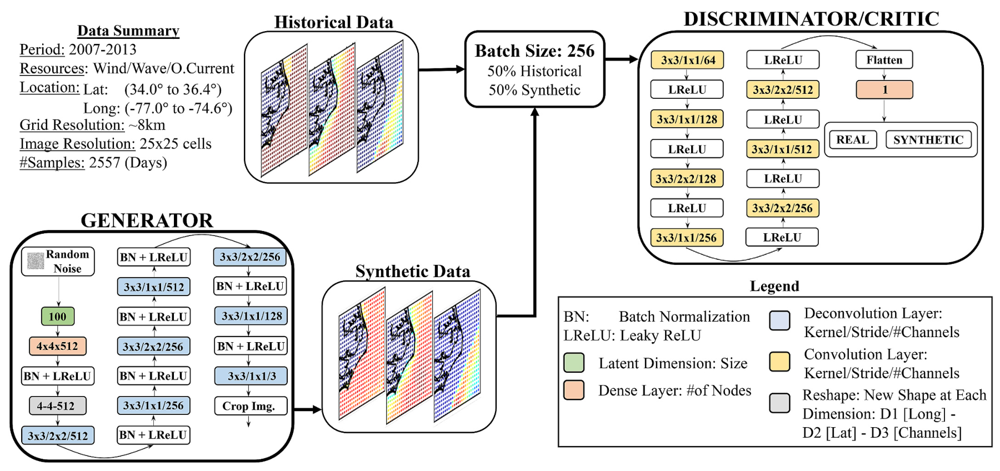

AI scenario generation and risk-averse offshore portfolios
Average output alone says little about how an offshore portfolio performs on its lowest-generation days. Minimizing variance can also obscure that risk, because variance penalizes unusually high and unusually low output alike. This project uses machine learning to represent uncertainty across renewable resources and locations, then selects sites to improve generation under adverse conditions.
I worked on this NCROEP project from August 2020 to August 2021, supervised by Anderson R. de Queiroz and Joseph F. DeCarolis. The 2023 paper examines uncertain resource availability; the related hurricane capacity expansion project examines infrastructure damage.

Learning the relationships between locations and resources. Each day is represented as a 25 × 25 geographic grid with wind, wave, and ocean-current channels. A generator creates synthetic maps while a critic compares them with historical data. Faria et al. (2023), Figure 1. Source paper.
Generating scenarios and selecting sites
Wind, wave, and ocean-current data for 2007–2013 are converted into daily electricity-generation profiles. The resource maps feed a convolutional generative adversarial network, or GAN, which learns relationships across more than 500 offshore locations and three technologies. Generated samples are evaluated using historical means, covariance patterns, and maximum mean discrepancy, a measure of similarity between distributions.
The generated scenarios feed a mixed-integer portfolio model. Its objective is to maximize the average generation in the worst 5% of conditions, using conditional value at risk (CVaR), subject to an upper bound on levelized energy cost. Device numbers, site capacity, and the collection-system radius constrain the choices. Repeating the optimization at different cost limits creates a frontier of tradeoffs between cost and low-generation performance.
Findings
The generative model captures relationships between resources and sites. It reproduces important spatial and cross-resource patterns in the historical data, allowing the portfolio model to account for what different sites produce at the same time.
The risk metric changes the selected portfolio. In the tested cases, variance-minimizing portfolios perform worse during the lowest 5% of generation conditions than portfolios optimized directly for that outcome.
Larger samples give more stable estimates. Using 30 years’ worth of generated daily samples instead of 10 reduces variation in the estimated cost-risk frontier when portfolios are evaluated on new samples. Combining resources also improves low-generation performance compared with less diversified portfolios.
The method uses AI-generated scenarios to guide site selection toward better performance during periods of low generation. These scenarios represent daily joint resource conditions, rather than chronological multi-year trajectories. Modeling temporal dependence and conditions beyond the historical record would extend the analysis. The study evaluates portfolio generation risk, not grid resource adequacy.
Paper and code
2023. Victor A. D. Faria, Anderson Rodrigo de Queiroz, and Joseph F. DeCarolis. Scenario generation and risk-averse stochastic portfolio optimization applied to offshore renewable energy technologies. Energy, 270, 126946.
Read the paper · GANs and CVaR portfolio code
This work extends the mean-variance offshore portfolio study.